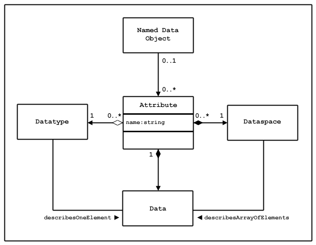
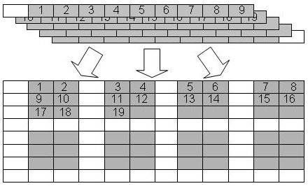
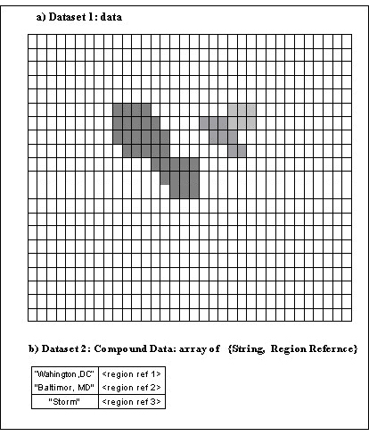
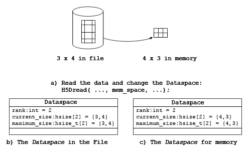
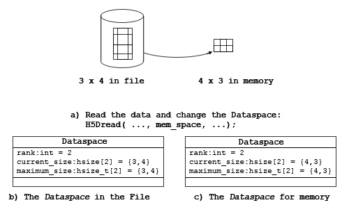
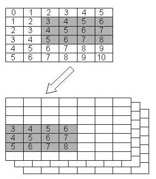

The HDF5 dataspace is a required component of an HDF5 dataset or attribute definition. The dataspace defines the size and shape of the dataset or attribute raw data, i.e., the number of dimensions and the size of each dimension of the multideminesional array in which the raw data is represented. The dataspace must be defined when the dataset or attribute is created.
The dataspace is also used during dataset I/O operations, defining the elements of the dataset that participate in the I/O operation.
This chapter explains the dataspace object and its use in dataset and attribute creation and data transfer. It also describes selection operations on a dataspace used to implement subsetting, subsampling, and scatter-gather access to datasets.
The rest of this chapter is structured as follows:
This section provides a reference list of dataspace functions, the H5S APIs, with brief descriptions. The functions are presented in several functional catagories:
Sections 3 through 6 will provide examples and explanations of how to use these functions.
|
C Function F90 Function |
Purpose |
H5Screate
|
Creates a new dataspace of a specified type. |
H5Scopy
|
Creates an exact copy of a dataspace. |
H5Sclose
|
Releases and terminates access to a dataspace. |
H5Screate_simple
|
Creates a new simple dataspace and opens it for access. |
H5Sis_simple
|
Determines whether a dataspace is a simple dataspace. |
H5Sextent_copy
|
Copies the extent of a dataspace. |
H5Sset_extent_simple
|
Sets or resets the size of an existing dataspace. |
H5Sset_extent_none
|
Removes the extent from a dataspace. |
|
C Function F90 Function |
Purpose |
H5Sget_simple_extent_dims
|
Retrieves dataspace dimension size and maximum size. |
H5Sget_simple_extent_ndims
|
Determines the dimensionality of a dataspace. |
H5Sget_simple_extent_npoints
|
Determines the number of elements in a dataspace. |
H5Sget_simple_extent_type
|
Determine the current class of a dataspace. |
|
C Function F90 Function |
Purpose |
H5Soffset_simple
|
Sets the offset of a simple dataspace. |
H5Sget_select_type
|
Determines the type of the dataspace selection. |
H5Sget_select_hyper_nblocks
|
Get number of hyperslab blocks. |
H5Sget_select_hyper_blocklist
|
Gets the list of hyperslab blocks currently selected. |
H5Sget_select_bounds
|
Gets the bounding box containing the current selection. |
H5Sselect_all
|
Selects the entire dataspace. |
H5Sselect_none
|
Resets the selection region to include no elements. |
H5Sselect_valid
|
Verifies that the selection is within the extent of the dataspace. |
H5Sselect_hyperslab
|
Selects a hyperslab region to add to the current selected region. |
|
C Function F90 Function |
Purpose |
H5Sget_select_npoints
|
Determines the number of elements in a dataspace selection. |
H5Sget_select_elem_npoints
|
Gets the number of element points in the current selection. |
H5Sget_select_elem_pointlist
|
Gets the list of element points currently selected. |
H5Sselect_elements
|
Selects array elements to be included in the selection for a dataspace. |
This section introduces the notion of the HDF5 dataspace object and a programming model for creating and working with dataspaces.
An HDF5 dataspace is a required component of an HDF5 dataset or attribute. A dataspace defines the size and the shape of a dataset's or an attribute’s raw data. Currently HDF5 supports two types of the dataspaces:
A scalar dataspace represents just one element, a scalar. Note that the datatype of this one element may be very complex, e.g., a compound structure with members being of any allowed HDF5 datatype, including multidimensional arrays, strings, and nested compound structures. [Retain? Note that by convention, a scalar dataspace has rank 0 (zero).]
A simple dataspace is a multidimensional array of elements. The dimensionality of the dataspace (or the rank of the array) is fixed and is defined at the creation time. The size of each dimension can grow during the life time of the dataspace from the current size up to the maximum size. Both the current size and the maximum size are specified at the creation time. The sizes of dimensions at any particular time of the datatype life are called the current dimensions or the dataspace extent. They can be queried along with the maximum sizes.
As shown in the UML diagram in Figure 1, an HDF5 simple dataspace object has three attributes: the rank or number of dimensions; the current sizes, expressed as an array of length rank with each element of the array denoting the current size of the corresponding dimension; and the maximum sizes, expressed as an array of length rank with each element of the array denoting the maximum size of the corresponding dimension.
| |||
| Figure 1: A simple dataspace is defined by its rank, the current size of each dimension, and the maximum size of each dimension. |
The size of a current dimension cannot be greater than
the maximum size, which can be unlimited,
specified as H5S_UNLIMITED.
Note that while the HDF5 file format and library impose no maximum size
on an unlimited dimension, practically speaking its size
will always be limited to the biggest integer available on the
particular system being used.
[ [ [ Prior excessively casual phrasing replaced (...the caveat that the value of infinity is limited to...). ] ] ])
Dataspace rank is restricted to 32, the standard limit in C on the rank of an array, in the current implementation of the HDF5 library. The HDF5 file format, on the other hand, allows any rank up to the maximum integer value on the system, so the library restriction can be raised in the future if higher dimensionality is required. (Note that most of the time Fortran applications calling HDF5 will work with dataspaces of rank less than or equal to seven, since seven is the maximum number of dimensions in a Fortran array. But dataspace rank is not limited to seven for Fortran applications. [ [ [ or "But with the use of XXX, Fortran applications can [easily?] work with dataspace rank of up to 32." ] ] ])
The current dimensions of a dataspace, also referred to as the
dataspace extent, define the bounding box for dataset elements that
can participate in I/O operations.
Programming Model
The programming model for creating and working with HDF5 dataspaces can be summarized as follows:
The rest of this section will address steps 1, 2, and 5 of the programming model; steps 3 and 4 will be discussed in later sections of this chapter.
Both scalar and simple dataspace can be created by calling the H5Screate (h5screate_f in Fortran) function. Since definition of the simple dataspace requires the specification of dimensionality (or rank) and initial and maximum dimension sizes, the HDF5 Library provides a convenience API, H5Screate_simple (h5screate_simple_f) to create a simple dataspace in on step. Examples below illustrate the usage of these APIs.
A scalar dataspace is created with the H5Screate
or the h5screate_f function:
In C:
hid_t space_id;
. . .
space_id = H5Screate(H5S_SCALAR);
In Fortran:
INTEGER(HID_T) :: space_id
. . .
CALL h5screate_f(H5S_SCALAR_F, space_id, error)
As mentioned above, the dataspace will contain only one element.
Scalar dataspaces are used more often for describing attributes
that have just one value,
e.g. the attribute Temperature with the
value Celsius is used to indicate that the
dataset with this attribute stores temperature values using the Celsius scale.
Let’s assume that an application wants to store a two-dimensional array of data A(20,100). During the life of the application the first dimension of the array can grow up to 30, and there is no restriction on the size of the second dimension. The following steps are used to declare a dataspace for the dataset in which the array data will be stored.
In C:
hid_t space_id;
int rank = 2;
hsize_t current_dims[2] = {10, 100};
hsize_t max_dims[2] = {H5S_UNLIMITED, 200};
. . .
space_id = H5Screate(H5S_SIMPLE);
H5Sset_extent_simple(space_id,rank,current_dims,max_dims);
In Fortran:
INTEGER(HID_T) :: space_id
INTEGER :: rank = 2
INTEGER(HSIZE_T) :: current dims = /( 10, 100)/
INTEGER(HSIZE_T) :: max_dims = /(H5S_UNLIMITED_F, 200)/
INTEGER error
. . .
CALL h5screate_f(H5S_SIMPLE_F, space_id, error)
CALL h5sset_extent_simple_f(space_id, rank, current_dims, max_dims, error)
Alternatively, the convenience APIs H5Screate_simple/h5screate_simple_f can replace the H5Screate/h5screate_f and H5Sset_extent_simple/h5sset_extent_simple_f calls.
In C:
space_id = H5Screate_simple( rank, current_dims, max_dims);
In Fortran:
CALL h5screate_simple_f(space_id, rank, current_dims, error, max_dims)
In this example (see Figure 2), a dataspace with current dimensions of 20 by 100 is created. The first dimension can be extended only up to 30. The second dimension, however, is declared unlimited; it can be extended up to the largest available integer value on the system. Recall that any dimension can be declared unlimited, and if a dataset uses a dataspace with any unlimited dimension, chunking has to be used (see section ??? in the "Datasets" chapter).
|  |
| Figure 2: Create a simple dataspace with a 10x100 array |
Maximum dimensions can be the same as current dimensions. In such a case, the sizes of dimensions cannot be changed during the life of the dataspace object. In C, NULL can be used to indicate to the H5Screate_simple and H5Sset_extent_simple functions that the maximum sizes of all dimensions are the same as the current sizes. In Fortran, the maximum size parameter is optional for h5screate_simple_f and can be omitted when the sizes are the same.
In C:
space_id = H5Screate_simple(rank, current_dims, NULL);
In Fortran:
CALL h5screate_f(space_id, rank, current_dims, error)
The created dataspace will have current and maximum dimensions
of 20 and 100 correspondingly,
and the sizes of those dimensions cannot be changed.
Dataspace dimensions are numbered from 1 to rank. HDF5 uses C storage conventions, assuming that the last listed dimension is the fastest-changing dimension and the first-listed dimension is the slowest changing. [ [ [ Fortran, on the other hand, .... ? ] ] ] The HDF5 file format storage layout specification adheres to the C convention and the HDF5 Library adheres to the same convention when storing dataspace dimensions in the file. This affects how C programs and tools interpret data written from Fortran programs and vice versa. The example below illustrates the issue.
When a Fortran application describes a dataspace to store an array as A(20,100), it specifies the value of the first dimension to be 20 and the second to be 100. Since Fortran stores data by columns, the first-listed dimension with the value 20 is the fastest-changing dimension and the last-listed dimension with the value 100 is the slowest-changing. In order to adhere to the HDF5 storage convention, the HDF5 Fortran wrapper transposes dimensions, so the first dimension becomes the last. The dataspace dimensions stored in the file will be 100,20 instead of 20,100 in order to correctly describe the fortran data that is stored in 100 columns, each containing 20 elements.
When a Fortran application reads the data back, the HDF5 Fortran wrapper transposes the dimensions once more, returning the first dimension to be 20 and the second to be 100, describing correctly the sizes of the array that should be used to read data in the Fortran array A(20,100).
When a C application reads data back, the dimensions will come out as 100 and 20, correctly describing the size of the array to read data into, since the data was written as 100 records of 20 elements each. Therefore C tools such as h5dump and h5ls always display transposed dimensions and values for the data written by a Fortran application.
Consider the following simple example of equivalent C 3x5 and Fortran 5x3 arrays. As illustrated in Figure 3, a C applications will store a 3x5 2-dimensional array as three 5-element rows. In order to store the same data in the same order, a Fortran application must view the array as as a 5x3 array with three 5-element columns. The dataspace of this dataset, as written from Fortran, will therefore be described as 5x3 in the application but stored and described in the file according to the C convention as a 3x5 array. This ensures that C and Fortran applications will always read the data in the order in which it was written. The HDF5 Fortran interface handles this transposition automatically.
In C (from h5_write.c):
#define NX 3 /* dataset dimensions */
#define NY 5
. . .
int data[NX][NY]; /* data to write */
. . .
/*
* Data and output buffer initialization.
*/
for (j = 0; j < NX; j++) {
for (i = 0; i < NY; i++)
data[j][i] = i + 1 + j*NY;
}
/*
* 1 2 3 4 5
* 6 7 8 9 10
* 11 12 13 14 15
*/
. . .
dims[0] = NX;
dims[1] = NY;
dataspace = H5Screate_simple(RANK, dims, NULL);
In Fortran (from h5_write.f90):
INTEGER, PARAMETER :: NX = 3
INTEGER, PARAMETER :: NY = 5
. . .
INTEGER(HSIZE_T), DIMENSION(2) :: dims = (/3,5/) ! Dataset dimensions
---
INTEGER :: data(NX,NY)
. . .
!
! Initialize data
!
do i = 1, NX
do j = 1, NY
data(i,j) = j + (i-1)*NY
enddo
enddo
!
! Data
!
! 1 2 3 4 5
! 6 7 8 9 10
! 11 12 13 14 15
. . .
CALL h5screate_simple_f(rank, dims, dspace_id, error)
In Fortran (from h5_write_tr.f90):
INTEGER, PARAMETER :: NX = 3
INTEGER, PARAMETER :: NY = 5
. . .
INTEGER(HSIZE_T), DIMENSION(2) :: dims = (/NY, NX/) ! Dataset dimensions
. . .
!
! Initialize data
!
do i = 1, NY
do j = 1, NX
data(i,j) = i + (j-1)*NY
enddo
enddo
!
! Data
!
! 1 6 11
! 2 7 12
! 3 8 13
! 4 9 14
! 5 10 15
. . .
CALL h5screate_simple_f(rank, dims, dspace_id, error)
The left-hand dataset above as written to an HDF5 file from C or the right-hand dataset as written from Fortran:
The left-hand dataset above as written to an HDF5 file from Fortran:
| ||||||||||||||||||||||||||||||||||||||||||||||||||||||||||||||||
| Figure 3: The HDF5 library stores arrays along the fastest-changing dimension, an approach often referred to as being “in C order.” C, C++, and Java work with arrays in row-major order, i.e., the row, or the last dimension, is the fastest-changing dimension. Fortran, on the other hands, handles arrays in column-major order, making the column, or the first dimension, the fastest-changing dimension. Therefore, the C and Fortran arrays illustrated in the top portion of this figure are stored identically in an HDF5 file. This ensures that data written by any language can be meaningfully read, interpreted, and manipulated by any other. |
[ [ [ Text here describing the extension of the dataset, per the following diagram. ] ]
|
|
| Figure 4: Extend the simple dataspace array to 12x130 |
The HDF5 Library provides several APIs designed to query the characteristics of a dataspace.
The function H5Sis_simple (h5sis_simple_f) returns information about the type of a dataspace. This function is rarely used and currently supports only simple and scalar dataspaces. [ [ [ Isn't that all of them? What other types are there? ] ] ]
To find out the dimensionality, or rank, of a dataspace, use H5Sget_simple_extent_ndims (h5sget_simple_extent_ndims_f). H5Sget_simple_extent_dims can also be used to find out the rank. See the example below. Both functions return 0 for the value of rank the dataspace is scalar.
To query the sizes of the current and maximum dimensions, use H5Sget_simple_extent_dims (h5sget_simple_extent_dims_f).
The following example illsutrates querying the rank and dimensions of a dataspace using these functions.
In C:
hid_t space_id;
int rank;
hsize_t *current_dims;
hsize_t *max_dims;
---------
rank=H5Sget_simple_extent_ndims(space_id);
(or rank=H5Sget_simple_extent_dims(space_id, NULL, NULL);)
current_dims= (hsize_t)malloc(rank*sizeof(hsize_t));
max_dims=(hsize_t)malloc(rank*sizeof(hsize_t));
H5Sget_simple_extent_dims(space_id, current_dims, max_dims);
Print values here for the previous example
In Fortran:
Example ??????????
The Dataspace object is also used to control data transfer when data is read or written. The Dataspace of the Dataset (Attribute) defines the stored form of the array data, the order of the elements as explained above. When reading from the file, the Dataspace of the Dataset defines the layout of the source data, a similar description is needed for the destination storage. A Dataspace object is used to define the organization of the data (rows, columns, etc.) in memory. If the program requests a different order for memory than the storage order, the data will be rearranged by the HDF5 library during the H5Dread operation. Similarly, when writing data, the memory Dataspace defines the source data, which is converted to the Dataset Dataspace when stored by the H5Dwrite call.
Figure 12a shows a simple example of a read operation in which the data is stored as a 3 by 4 array in the file (Figure 12b), but the program wants it to be a 4 by 3 array in memory. This is accomplished by setting the memory Dataspace to describe the desired memory layout, as in Figure 12c. The HDF5 library will transform the data to the correct arrangement during the read operation.

|
| Figure 12 |

|
| Figure 13 |
Both the source and destination are stored as contiguous blocks of storage, with the elements in the order specified by the Dataspace. Figure 13 shows one way the elements might be organized. In Figure 13a, the elements are stored as 3 blocks of 4 elements. The destination is an array of 12 elements in memory (Figure 13c). As the figure suggests, the transfer reads the disk blocks into a memory buffer (Figure 13b), and then writes the elements to the correct locations in memory. A similar process occurs in reverse when data is written to disk.
In addition to rearranging data, the transfer may select the data elements from the source and destination.
Data selection is implemented by creating a Dataspace object that describes the selected elements (within the hyper rectangle) rather than the whole array. Two Dataspace objects with selections can be used in data transfers to read selected elements from the source and write selected elements to the destination. When data is transferred using the Dataspace object, only the selected elements will be transferred.
This can be used to implement partial I/O, including:
To use selections, the following steps are followed:
A selection is created by applying one or more selections to a Dataspace. A selection may override any other selections (H5T_SELECT_SET) or may be 'Ored' with previous selections on the same Dataspace (H5T_SELECT_OR). In the latter case, the resulting selection is the union of the selection and all previously selected selections. Arbitrary sets of points from a Dataspace can be selected by specifying an appropriate set of selections.
Two selections are used in data transfer, so the source and destination must be compatible, as described below.
There are two forms of selection, hyperslab and point. A selection must be either a point selection or a set of hyperslab selections. Selections cannot be mixed.
A hyperslab is a selection of elements from a hyper rectangle. An HDF5 hyperslab is a rectangular pattern defined by four arrays (Table 1). The start defines the origin of the hyperslab in the original Dataspace. The stride is the number of elements to increment between selected elements. A stride of '1' is every element, a stride of '2' is every second element, etc. Note that there may be a different stride for each dimension of the Dataspace. The default stride is 1.
The count is the number of elements in the hyperslab selection. When the stride is 1, the selection is a hyper rectangle with a corner at start and size count[0] by count[1] by …. When stride is greater than one, the hyperslab bounded by start and the corners defined by stride[n] * count[n].
Table 1 |
|
| Parameter |
Description |
| start |
Starting location for the hyperslab. |
| stride |
The number of elements to separate each element or block to be selected. |
| count |
The number of elements or blocks to select along each dimension. |
| block |
The size of the block selected from the dataspace. |
The block is a count on the number of repetitions of the hyperslab. The default block size is '1', which is one hyperslab. A block of 2 would be two hyperslabs in that dimension, with the second starting at start[n]+ (count[n] * stride[n]) + 1.
A hyperslab can be used to access a sub-set of a large Dataset. Figure 14 shows an example of a hyperslab that reads a rectangle from the middle of a larger two dimensional array. The destination is the same shape as the source.
|  |
| Figure 14 |
Hyperslabs can be combined to select complex regions of the source and destination. Figure 15 shows an example of a transfer from one non-rectangular region into another non-rectangular region. The source is defined as the union of two hyperslabs, and the destination is the union of three hyperslabs.

|
| Figure 15 |
Hyperslabs may also be used to collect or scatter data from regular patterns. Figure 16 shows an example where the source is a repeating pattern of blocks, and the destination is a single, one dimensional array.

|
| Figure 16 |
The second type of selection is an array of points, i.e., coordinates. Essentially, this selection is a list of all the points to include. Figure 17 shows an example of a transfer of seven elements from a two dimensional Dataspace to a three dimensional Dataspace using a point selection to specify the points.

|
| Figure 17 |
A selection must have the same number of dimensions (rank) as the Dataspace it is applied to, although it may select from only a small region, e.g., a plane from a 3D Dataspace. Selections do not affect the extent of the Dataspace, the selection may be larger than the Dataspace. The boundaries of selections are reconciled with the extent at the time of the data transfer.
A data transfer (read or write) with selections is the same as any read or write, except the source and destination Dataspace have compatible selections.
During the data transfer, the following steps are executed by the library.
1. The source and destination Dataspaces are checked to assure that the selections are compatible.
1. Each selection must be within the current extent of the Dataspace. A selection may be defined to extend outside the current extent of the Dataspace, but the Dataspace cannot be accessed if the selection is not valid at the time of the access.
2. The total number of points selected in the source and destination must be the same. Note that the dimensionality of the source and destination can be different (e.g., the source could be 2D, the destination 1D or 3D), and the shape can be different, but the number of elements selected must be the same.
2. The data is transferred, element by element.
Selections have an iteration order for the points selected, which can be any permutation of the dimensions involved (defaulting to 'C' array order) or a specific order for the selected points, for selections composed of single array elements with H5Sselect_elements.
The elements of the selections are transferred in row-major, or C order. That is, it is assumed that the first dimension varies slowest, the second next slowest, and so forth. For hyperslab selections, the order can be any permutation of the dimensions involved (defaulting to 'C' array order). When multiple hyperslabs are combined, the hyperslabs are coalesced into contiguous reads and writes
In the case of point selections, the points are read and written in the order specified.
Suppose we want to read a 3x4 hyperslab from a dataset in a file beginning at the element <1,2> in the dataset, and read it into a 7x7x3 array in memory (Figure 18). In order to do this, we must create a dataspace that describes the overall rank and dimensions of the dataset in the file, as well as the position and size of the hyperslab that we are extracting from that dataset.

|
| Figure 18 |
The code in Figure 19 illustrates the selection of the hyperslab in the file dataspace. Figure 20 shows de definition of the destination Dataspace in memory. Since the in-memory Dataspace has three dimensions, the hyperslab is an array with three dimensions, with the last dimension being 1: <3,4,1>. Figure 21 shows the read using the source and destination Dataspaces with selections.
|
| Figure 19 |
|
| Figure 20 |
|
| Figure 21 |
Consider an 8x12 dataspace, in which we want to write into eight 3x2 blocks from a source dataspace in memory that is a 50-element one dimensional array called (Figure 22).
|  |
| Figure 22 |
Figure 23 shows example code to write 48 elements from the 1D array to the file dataset, starting with the second element in vector. The destination hyperslab has the following parameters: start=(0,1), stride=(4,3), count=(2,4), block=(3,2). The source has the parameters: start=(1), stride=(1), count=(48), block=(1). After these operations, the file dataspace will have the values shown in Figure 22. Notice that the values are inserted in the file dataset in row-major order.
|
| Figure 23 |
| Figure 24 |
The HDF5 Library allows the user to select a union of hyperslabs and write or read the selection into another selection. The shapes of the two selections may differ, but the number of elements must be equal.
Figure 24 shows a transfer of a selection that is two overlapping hyperslabs from the dataset into a union of hyperslabs in the memory dataset. Note that the destination dataset has a different shape from the source dataset. Similarly, the selection in the memory dataset could have a different shape than the selected union of hyperslabs in the original file. For simplicity, the selection is that same shape at the destination.
To implement this transfer, it is necessary to:
Figure 25 shows example code to create the selections for the source Dataspace (the file). The first hyperslab is size 3x4 and the left upper corner at the position (1,2). The hyperslab is a simple rectangle, so the stride and block are 1. The second hyperslab is 6x5 at the position (2,4). The second selection is a union with the first hyperslab (H5S_SELECT_OR).
|
| Figure 25 |
Figure 26 shows example code to create the selection for the destination in memory. The steps are similar. In this example, the hyperslabs are the same shape, but located in different positions in the Dataspace. The first hyperslab is 3x4 and starts at (0,0), and the second is 6x5 and starts at (1,2).
Finally the H5Dread call transfers the selected data from the file dataspace to the selection in memory.
In this example, the source and destination selections are two overlapping rectangles. In general, any number of rectangles can be OR'ed, and they do not have to be contiguous. The order of the selections does not matter, but the first should use H5S_SELECT_SET, subsequent selections are unioned using H5S_SELECT_OR.
It is important to emphasize that the source and destination do not have to be the same shape (or number of rectangles). As long as the two selections have the same number of elements, the data can be transferred.
|
| Figure 26 |
It is also possible to specify a list of elements to read or write using the function H5Sselect_elements. The procedure is similar to hyperslab selections.
Figure 27 shows an example where four values are to be written to four separate points in a two dimensional Dataspace. The source Dataspace is a one dimensional array with the values 53, 59, 61, 67. The destination Dataspace is an 8x12 array. The elements are to be written to the points (0,0), (3,3), (3,5), and (5,6). In this example, the source does not require a selection. Figure 28 shows example code to implement this transfer.
A point selection lists the exact points to be transferred and the order they will be transferred. The source and destination are required to have the same number of elements. A point selection can be used with a hyperslab (e.g., the source could be a point selection and the destination a hyperslab, or vice versa), so long as the number of elements selected are the same.

|
| Figure 27 |
|
| Figure 28 |
Selections are a very flexible mechanism for reorganizing data during a data transfer. With different combinations of Dataspaces and selections, it is possible to implement many kinds of data transfers, including sub-setting, sampling, and reorganizing the data. Table 2 gives some example combinations of source and destination, and the operations they implement.
Table 2 |
||
Source |
Destination |
Operation |
| all |
all |
Copy whole array |
| all |
All (different shape) |
Copy and reorganize array |
| hyperslab |
all |
Sub-set |
| hyperslab |
Hyperslab (same shape) |
selection |
| hyperslab |
Hyperslab (different shape) |
Select and rearrange |
| Hyperslab with stride or block |
All or hyperslab with stride 1 |
Sub-sample, scatter |
| hyperslab |
points |
scatter |
| points |
Hyperslab or all |
gather |
| points |
Points (same) |
selection |
| points |
Points (different) |
Reorder points |
(With apologies to the reader, this section has yet to be written. -- The Editor) So write the section, already!
Another use of selections is to store a reference to a region of a Dataset. An HDF5 Object Reference Object is a pointer to an object (Dataset, Group, or Named Datatype) in the file. A selection can be used to create a pointer to a set of selected elements of a Dataset, called a Region Reference. The selection can be either a point selection or a hyperslab selection. A more complete description of Region References can be found in the chapter "HDF5 Datatypes."
A Region Reference is an object maintained by the HDF5 library. The region reference can be stored in a Dataset or Attribute, and then read. The Dataset or Attribute is defined to have the special Datatype, H5T_STD_REF_DSETREG.
To discover the elements and/or read the data, the Region Reference can be deferenced. The H5Rdefrerence call returns a handle for the Dataset, and then the selected dataspace can be retrieved with H5Rget_select call. The selected Dataspace can be used to read the selected data elements.
Region References are used to implement stored pointers to data within a Dataset. For example, features in a large dataset might be indexed by a table (Figure 29). This table could be stored as an HDF5 Dataset with a Compound Datatype, for example with a field for the name of the feature and a Region Reference to point to the feature in the Dataset (Figure 30).

|
| Figure 29 |

|
| Figure 30 |
To create a region reference:
Figure 31 shows a diagram of a file with three Datasets. Dataset D1 and D2 are two dimensional arrays of integers. Dataset R1 is a one dimensional array of references to regions in D1 and D2. The regions can be any valid selection of the Dataspace of the target Dataset.

|
| Figure 31 |
Figure 32 shows example code to create the array of region references. The references are created in an array of type hdset_reg_ref_t. Each region is defined as a selection on the Dataspace of the Dataset, and a reference is created using H5Rcreate(). The call to H5Rcreate() specifies the file, Dataset, and the Dataspace with selection.
|
| Figure 32 |
When all the references are created, the array of references is written to the Dataset R1. The Dataset is declared to have Datatype H5T_STD_REF_DSETREG (Figure 33).
|
| Figure 33 |
When creating region references, the following rules are enforced.
To retrieve data from a region reference, the reference must be read from the file, and then the data can be retrieved. The steps are:
Figure 34 shows example code to read an array of region references from a Dataset, and then read the data from the first selected region. Note that the region reference has information that records the Dataset (within the file) and the selection on the Dataspace of the Dataset. After dereferencing the regions reference, the Datatype, number of points, and some aspects of the selection can be discovered. (For a union of hyperslabs, it may not be possible to determine the exact set of hyperslabs that has been combined.) Table 3 shows the inquiry functions.
When reading data from a region reference, the following rules are enforced:
|
| Figure 34 |
Table 3 |
|
| Function |
Information |
| H5Sget_select_npoints |
The number of elements in the selection (hyperslab or point selection) |
| H5Sget_select_bounds |
The bounding box that encloses the selected points (hyperslab or point selection) |
| H5Sget_select_hyper_nblocks |
The number of blocks in the selection. |
| H5Sget_select_hyper_blocklist |
A list of the blocks in the selection |
| H5Sget_select_elem_npoints |
The number of points in the selection. |
| H5Sget_select_elem_pointlist |
The points. |
h5dump output from the program's output file
immediately follows each program.
h5_write.c
----------
#include "hdf5.h"
#define H5FILE_NAME "SDS.h5"
#define DATASETNAME "C Matrix"
#define NX 3 /* dataset dimensions */
#define NY 5
#define RANK 2
int
main (void)
{
hid_t file, dataset; /* file and dataset handles */
hid_t datatype, dataspace; /* handles */
hsize_t dims[2]; /* dataset dimensions */
herr_t status;
int data[NX][NY]; /* data to write */
int i, j;
/*
* Data and output buffer initialization.
*/
for (j = 0; j < NX; j++) {
for (i = 0; i < NY; i++)
data[j][i] = i + 1 + j*NY;
}
/*
* 1 2 3 4 5
* 6 7 8 9 10
* 11 12 13 14 15
*/
/*
* Create a new file using H5F_ACC_TRUNC access,
* default file creation properties, and default file
* access properties.
*/
file = H5Fcreate(H5FILE_NAME, H5F_ACC_TRUNC, H5P_DEFAULT, H5P_DEFAULT);
/*
* Describe the size of the array and create the data space for fixed
* size dataset.
*/
dims[0] = NX;
dims[1] = NY;
dataspace = H5Screate_simple(RANK, dims, NULL);
/*
* Create a new dataset within the file using defined dataspace and
* datatype and default dataset creation properties.
*/
dataset = H5Dcreate(file, DATASETNAME, H5T_NATIVE_INT, dataspace,
H5P_DEFAULT);
/*
* Write the data to the dataset using default transfer properties.
*/
status = H5Dwrite(dataset, H5T_NATIVE_INT, H5S_ALL, H5S_ALL,
H5P_DEFAULT, data);
/*
* Close/release resources.
*/
H5Sclose(dataspace);
H5Dclose(dataset);
H5Fclose(file);
return 0;
}
SDS.out
-------
HDF5 "SDS.h5" {
GROUP "/" {
DATASET "C Matrix" {
DATATYPE H5T_STD_I32BE
DATASPACE SIMPLE { ( 3, 5 ) / ( 3, 5 ) }
DATA {
1, 2, 3, 4, 5,
6, 7, 8, 9, 10,
11, 12, 13, 14, 15
}
}
}
}
h5_write.f90
------------
PROGRAM DSETEXAMPLE
USE HDF5 ! This module contains all necessary modules
IMPLICIT NONE
CHARACTER(LEN=7), PARAMETER :: filename = "SDSf.h5" ! File name
CHARACTER(LEN=14), PARAMETER :: dsetname = "Fortran Matrix" ! Dataset name
INTEGER, PARAMETER :: NX = 3
INTEGER, PARAMETER :: NY = 5
INTEGER(HID_T) :: file_id ! File identifier
INTEGER(HID_T) :: dset_id ! Dataset identifier
INTEGER(HID_T) :: dspace_id ! Dataspace identifier
INTEGER(HSIZE_T), DIMENSION(2) :: dims = (/3,5/) ! Dataset dimensions
INTEGER :: rank = 2 ! Dataset rank
INTEGER :: data(NX,NY)
INTEGER :: error ! Error flag
INTEGER :: i, j
!
! Initialize data
!
do i = 1, NX
do j = 1, NY
data(i,j) = j + (i-1)*NY
enddo
enddo
!
! Data
!
! 1 2 3 4 5
! 6 7 8 9 10
! 11 12 13 14 15
!
! Initialize FORTRAN interface.
!
CALL h5open_f(error)
!
! Create a new file using default properties.
!
CALL h5fcreate_f(filename, H5F_ACC_TRUNC_F, file_id, error)
!
! Create the dataspace.
!
CALL h5screate_simple_f(rank, dims, dspace_id, error)
!
! Create and write dataset using default properties.
!
CALL h5dcreate_f(file_id, dsetname, H5T_NATIVE_INTEGER, dspace_id, &
dset_id, error)
CALL h5dwrite_f(dset_id, H5T_NATIVE_INTEGER, data, dims, error)
!
! End access to the dataset and release resources used by it.
!
CALL h5dclose_f(dset_id, error)
!
! Terminate access to the data space.
!
CALL h5sclose_f(dspace_id, error)
!
! Close the file.
!
CALL h5fclose_f(file_id, error)
!
! Close FORTRAN interface.
!
CALL h5close_f(error)
END PROGRAM DSETEXAMPLE
SDSf.out
--------
HDF5 "SDSf.h5" {
GROUP "/" {
DATASET "Fortran Matrix" {
DATATYPE H5T_STD_I32BE
DATASPACE SIMPLE { ( 5, 3 ) / ( 5, 3 ) }
DATA {
1, 6, 11,
2, 7, 12,
3, 8, 13,
4, 9, 14,
5, 10, 15
}
}
}
}
h5_write_tr.f90
---------------
PROGRAM DSETEXAMPLE
USE HDF5 ! This module contains all necessary modules
IMPLICIT NONE
CHARACTER(LEN=10), PARAMETER :: filename = "SDSf_tr.h5" ! File name
CHARACTER(LEN=24), PARAMETER :: dsetname = "Fortran Transpose Matrix"
! Dataset name
INTEGER, PARAMETER :: NX = 3
INTEGER, PARAMETER :: NY = 5
INTEGER(HID_T) :: file_id ! File identifier
INTEGER(HID_T) :: dset_id ! Dataset identifier
INTEGER(HID_T) :: dspace_id ! Dataspace identifier
INTEGER(HSIZE_T), DIMENSION(2) :: dims = (/NY, NX/) ! Dataset dimensions
INTEGER :: rank = 2 ! Dataset rank
INTEGER :: data(NY,NX)
INTEGER :: error ! Error flag
INTEGER :: i, j
!
! Initialize data
!
do i = 1, NY
do j = 1, NX
data(i,j) = i + (j-1)*NY
enddo
enddo
!
! Data
!
! 1 6 11
! 2 7 12
! 3 8 13
! 4 9 14
! 5 10 15
!
! Initialize FORTRAN interface.
!
CALL h5open_f(error)
!
! Create a new file using default properties.
!
CALL h5fcreate_f(filename, H5F_ACC_TRUNC_F, file_id, error)
!
! Create the dataspace.
!
CALL h5screate_simple_f(rank, dims, dspace_id, error)
!
! Create and write dataset using default properties.
!
CALL h5dcreate_f(file_id, dsetname, H5T_NATIVE_INTEGER, dspace_id, &
dset_id, error)
CALL h5dwrite_f(dset_id, H5T_NATIVE_INTEGER, data, dims, error)
!
! End access to the dataset and release resources used by it.
!
CALL h5dclose_f(dset_id, error)
!
! Terminate access to the data space.
!
CALL h5sclose_f(dspace_id, error)
!
! Close the file.
!
CALL h5fclose_f(file_id, error)
!
! Close FORTRAN interface.
!
CALL h5close_f(error)
END PROGRAM DSETEXAMPLE
SDSf_tr.out
-----------
HDF5 "SDSf_tr.h5" {
GROUP "/" {
DATASET "Fortran Transpose Matrix" {
DATATYPE H5T_STD_I32LE
DATASPACE SIMPLE { ( 3, 5 ) / ( 3, 5 ) }
DATA {
1, 2, 3, 4, 5,
6, 7, 8, 9, 10,
11, 12, 13, 14, 15
}
}
}
}
LATER: used to describe the layout of a memory buffer used in data transfer, and to define selections from a Dataset. In this role, there are two Dataspace objects, one for the source and one for the destination.
Selected data can be read from or written to a Dataset using selections. A selection is a set of elements from the Dataspace. A selection is specified by a set of hyperslabs which specify which elements of the Dataspace are selected.
ELSEWHERE: Selections can also be used to define a reference to a selected region of a dataset. An Object Reference is a pointer to a Named Object in the HDF5 file. A Region Reference is a pointer to a set of elements in a Dataset specified by a selection.
OLD: Figure 4a shows an example of a two-dimensional array declared in C as a 5 by 3 array. The elements of this array would be stored with the second dimension as the fastest changing index, as shown in Figure 4c. Figure 5 shows C code that declares the Dataspace.
The Dataspace object is used to define a Dataset (or Attribute). The Dataspace object describes a hyper rectangle of one to 32 dimensions. (Figure 3) The number of dimensions is the rank of the array. Dimensions begin at the origin (element '0' in C), each dimension has a current and a maximum size.
A special case is a Dataspace with one element. This is termed a "scalar" Dataspace, and conventionally has a rank of '0'. A scalar Dataspace is implemented as a one-dimensional array with one element. In other words, a scalar Dataspace is functionally equivalent to a regular Dataspace of rank 1, with current and maximum size of 1.
In defining a Dataspace, HDF5 uses the conventions of the C programming language [cite something]. The dimensions of the Dataspace are numbered from '0' to 'rank - 1', and stored with the fastest changing dimension last. Figure 4a shows an example of a two-dimensional array declared in C as a 5 by 3 array. The elements of this array would be stored with the second dimension as the fastest changing index, as shown in Figure 4c. Figure 5 shows C code that declares the Dataspace.
When accessed through the Fortran interface, dimensions are described using Fortran conventions [cite f90]: numbered from 1 to 'rank', with the fastest changing dimension first. Figure 4b shows a FORTRAN array declaration, and Figure 4d shows the storage order of the elements. The HDF5 FORTRAN API rearranges the dimensions to assure that both the stored information is correct (i.e., in C order) and the arrays and dimensions are correct for the Fortran. Figure 6 shows C code that declares the Dataspace.
Note that the data elements are stored by HDF5 the same way for either C or FORTRAN. This assures that a file written by FORTRAN will work correctly when read by C, or vice versa. The C and FORTRAN API's assure that the indexing in memory is consistent with the programming language.
 

|
| Figure 4 |
|
| Figure 5 |
|
| Figure 6 |
| Figure 7 |
The Dataspace for a Dataset can be extended in any dimension, up to its maximum size (which may be unlimited). Any Dataset with one or more unlimited dimension must be chunked. Figure 7a shows a two-dimensional Dataspace which is declared to have a current size of 5 by 3, with a maximum of 6 by 5. In the figure, the shaded boxes are the currently allocated space. The Dataspace of the Dataset can be extended in either or both dimension with the H5Dextend call. Figure 7b shows the array extended by one column, to be 5 by 4.
Unlike HDF5 and other formats, an HDF5 Dataspace can have no, some, or all of its dimensions extendible, and each can be extended independently. If any dimension is unlimited, then the Dataset must be chunked. This is necessary so that storage can be allocated as the Dataspace extends.
{Explain Allocation and fill values when creating/extending - get someone to explain this…}
When the Dataset (Attribute) is created, space in the file is (conceptually) allocated for a rectangle of the current size of each dimension. The allocated space is filled with the fill value (specified by the fill value property when the Dataset is created), or else filled with zeroes.
The array may be extended with the H5Dextend function. Each dimension may be extended up to its maximum size, which may be unlimited. Note that none, some, or all of the dimensions may be extendible. Note that any dataset with one or more unlimited dimension must be chunked. When the Dataset is extended, additional chunks are allocated and filled with the fill value.
See ?? for a detailed explanation of space allocation and fill values.
Figure 8 shows an example of C code that creates a two dimensional Dataspace that is extendable. The initial size is 3 X 3, the maximum size is H5S_UNLIMITED. Note that the Dataset must be chunked (in this example, 2 X 5 chunks).
|
| Figure 8 |
To extend the dataset, the new size of the dimensions is set, and H5Dextend is called. F9 shows code to extend the previous example to 10 X 3. Note that it is not possible to change the number of dimensions or to shrink the size of a dimension.
|
| Figure 9 |
The Dataspace defines the conceptual layout of the data as a hyper rectangle. The actual data elements are stored in one or more contiguous blocks in the file, depending on the Dataset storage properties. A Dataset may be stored in one of three strategies:
The Dataspace of a Dataset is the same no matter which storage
layout is used.
When the Dataset uses the chunked storage, the chunk is defined as a hyper
rectangle of the same dimensionality as the Dataspace. Storage is allocated
in chunks, and the elements of the Dataspace are stored in the appropriate chunk.
|  |
| Figure 10 |
Figure 10 shows an example of data arranged as a two dimensional Dataspace, 7 X 5. Figure 10b shows how the data would be stored for a chunked Dataset, with 3 X 3 chunks. Note that some space in the chunks is not used. Each chunk is stored as a single contiguous block of data, as shown in Figure 10c. The chunks are not necessarily stored contiguous with each other.
A Dataset with the same Dataspace might be stored with many different chunk sizes. Figure 11 shows how the same Dataspace would be stored using 8 X 2 chunks. The Dataspace is identical in both cases, but the total storage used in the second example is less and the number of chunks is different.

|
| Figure 11 |
The chunks may be any size, chunks are allocated to store the data. If a chunk extends than the extent of the Dataspace, the extra space is stored but not used. In Figure 10 and Figure 11, the chunks did not fit precisely to the Dataspace, so some space was not used.
Do we wish to retain any of the remainder of this section?
Or does the remainder go to "Programming Model" or elsewhere?
The dimensions of the Dataspace are numbered from '1' to 'rank'. The values of the dimension indices used to access raw data are 0-based in the C, C++ and Java programming models and 1-based in Fortran. For example, suppose we have a 3x5 2-dimensional dataspace. To access the 3rd element in the 2nd row, a C application will describe the position of this element as (1,2) while a Fortran application will describe it as (2,3).
HDF5 stores data along the the fastest changing dimension. In C, C++, and Java applications, the fastest-changing dimension is the last-listed dimension and the first-listed dimension is the slowest-changing. In Fortran applications, it is the reverse: the fastest-changing dimension is the first-listed dimension and the last-listed dimension is the slowest-changing.
|
New extensible dataset image goes here. |
| Figure 2: Extensible dataset explanatory caption |
| Figure 3 |
| Figure 4 |
- - - - - - - - - - - - - - - - - - - - -
Figures 5 and 6 show the C and Fortran code, respectively, that define the required dataspace required for the above-described arrays. These examples are designed specifically to create dataspaces and to store arrays that can later be read back and manipulated by applications written in C, C++, Java, or Fortran without requiring any manipulation to make the data meaningful.
In the C example, the elements of the array will be stored with the second dimension as the fastest changing index; this is commonly known as row-major order. In the Fortran example, the elements of the array will be stored with the first dimension as the fastest changing index; this is commonly known as column-major order.
|
| Figure 5: C code to generate a 5x3 dataspace and array |
|
| Figure 6: Fortran code to generate the corresponding 3x5 dataspace and array |
The dataspace object created above is then used to define a dataset or Attribute). The Dataspace object describes a hyper rectangle of one to 32 dimensions. (Figure 3) The number of dimensions is the rank of the array. Dimensions begin at the origin (element '0' in C), each dimension has a current and a maximum size.
A special case is a Dataspace with one element. This is termed a "scalar" Dataspace, and conventionally has a rank of '0'. A scalar Dataspace is implemented as a one-dimensional array with one element. In other words, a scalar Dataspace is functionally equivalent to a regular Dataspace of rank 1, with current and maximum size of 1.
In defining a Dataspace, HDF5 uses the conventions of the C programming language [cite something]. The dimensions of the Dataspace are numbered from '0' to 'rank - 1', and stored with the fastest changing dimension last. Figure 4a shows an example of a two-dimensional array declared in C as a 5 by 3 array. The elements of this array would be stored with the second dimension as the fastest changing index, as shown in Figure 4c. Figure 5 shows C code that declares the Dataspace.
When accessed through the Fortran interface, dimensions are described using Fortran conventions [cite f90]: numbered from 1 to 'rank', with the fastest changing dimension first. Figure 4b shows a FORTRAN array declaration, and Figure 4d shows the storage order of the elements. The HDF5 FORTRAN API rearranges the dimensions to assure that both the stored information is correct (i.e., in C order) and the arrays and dimensions are correct for the Fortran. Figure 6 shows C code that declares the Dataspace.
Note that the data elements are stored by HDF5 the same way for either C or FORTRAN. This assures that a file written by FORTRAN will work correctly when read by C, or vice versa. The C and FORTRAN API's assure that the indexing in memory is consistent with the programming language.